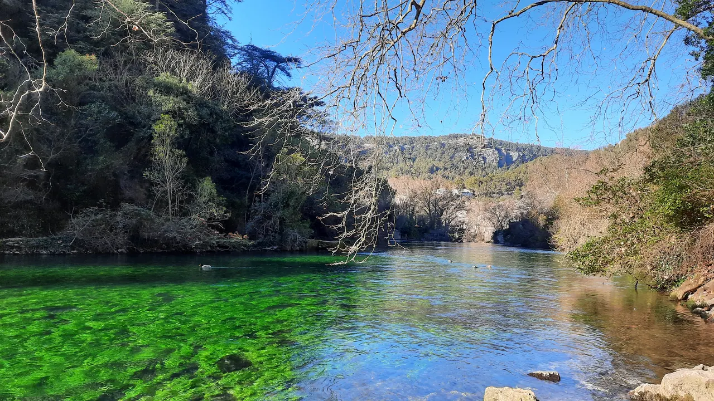

.jpg){kind=link}
관광·미술관
Nous avons déjà des billets.
이미 표가 있습니다.
누 자봉 데자 데 비예

L'Isle-sur-la-Sorgue의 수로를 채우는 물이 시작되는 곳이다. 마을에서 상류로 걸을수록 강변 카페와 수차 풍경이 거대한 석회암 절벽과 수원지의 자연 경관으로 바뀐다.
수량은 계절과 강수에 따라 크게 달라진다. 언제나 같은 거대한 분출을 기대하기보다 맑은 강물, 절벽과 짧은 보행을 함께 보는 장소로 이해한다.
| 가는 법 | 마을 공영주차 후 Sorgue 강을 따라 수원지 접근 가능 범위까지 왕복 재확인 |
|---|---|
| 소요시간 | 60–90분 재확인 |
| 메모 | Avignon 15:00–16:00 체크인을 해치지 않을 때만 방문 재확인 |
RS01 일정 조정으로 기본 일정에서 빠졌다. Day 18 오후 L'Isle 왕복에 시간이 크게 남을 때만 연장 후보로 검토한다.
Sorgue 수계는 석회암 지대의 지하수를 모아 이곳에서 지표로 드러낸다. 깊은 수원 공동은 오랫동안 탐사의 대상이었고, 수량 변화가 마을 풍경을 크게 바꾼다.
마을의 제지 전통을 보여주는 Vallis Clausa 방향으로 걸으면 강의 산업적 이용과 자연 수계를 한 동선에서 볼 수 있다.
| 항목 | 상세 정보 |
|---|---|
| 위치 | 84800 Fontaine-de-Vaucluse, Vaucluse |
| 마을 입장 | 상시 개방 / 무료 |
| 권장 체류 | 60–90분 |
| 주차 | 마을 외곽 지정 주차 후 강변 보행 |
| 당일 확인 | 비·수량·수원지 접근 가능 범위와 보행로 상태 |
Nous avons déjà des billets.
이미 표가 있습니다.
누 자봉 데자 데 비예
On peut prendre des photos ?
사진 찍어도 되나요?
옹 푀 프랑드르 데 포토
Où commence la visite ?
관람은 어디서 시작하나요?
우 코망스 라 비지트

Gordes 북쪽 좁은 계곡의 12세기 Cistercian 수도원. 화려함보다 절제된 로마네스크 건축과 침묵의 공간이 핵심이다.

Petit Luberon 북사면을 따라 층층이 올라가는 언덕마을. 정상의 오래된 교회에서 Lacoste와 Calavon 계곡을 바라보는 전망이 핵심이다.

뤼베롱 현지 농부들이 직접 재배하고 만든 신선 농산물과 특산품을 판매하는 생산자 직거래 일요 시장. 이번 Day 17–18 일정에는 넣지 않은 지역 참고 Place다.

바위 언덕 위에 석회암 집들이 층층이 매달린 Luberon의 대표 이미지. 진입도로 파노라마와 해질 무렵의 돌빛이 핵심이다.

대형 관광버스가 닿지 않아 뤼베롱에서 가장 고요하고 평화로운 '숨겨진 보석' 마을. 언덕 정상의 17세기 예루살렘 풍차(Moulin de Jérusalem)와 현지인들의 정겨운 일상이 살아있는 골목길.

Bonnieux 맞은편 언덕에 붙은 작은 석조마을. 중세 성벽 골목과 Marquis de Sade로 알려진 성터가 마을의 성격을 만든다.